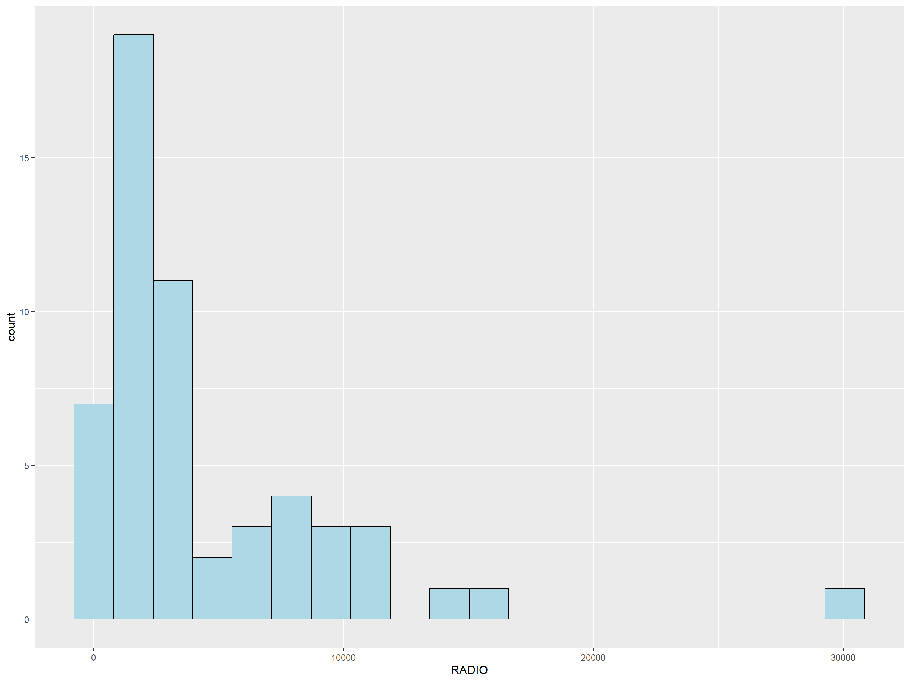
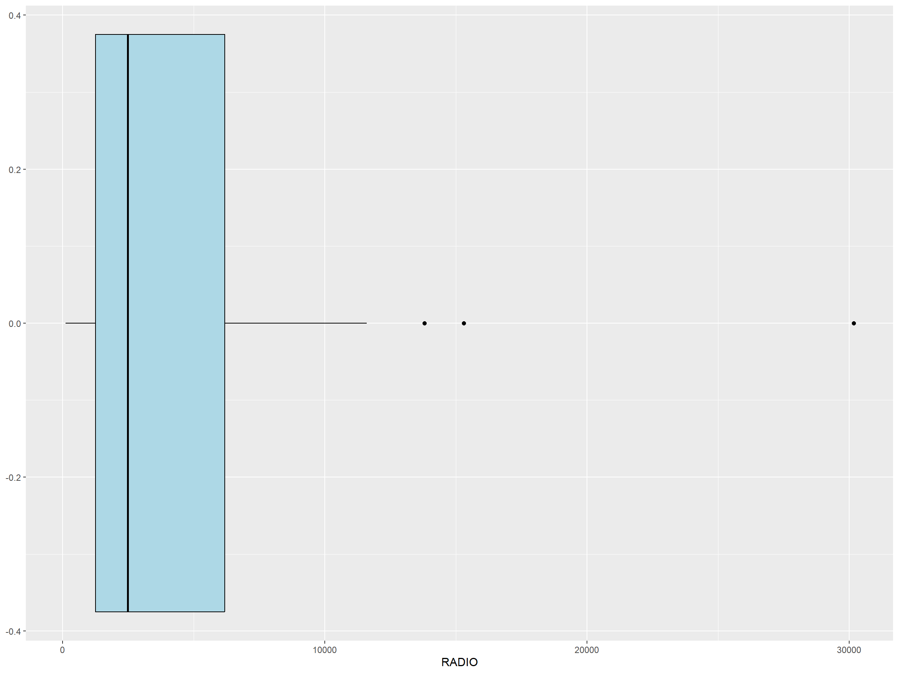
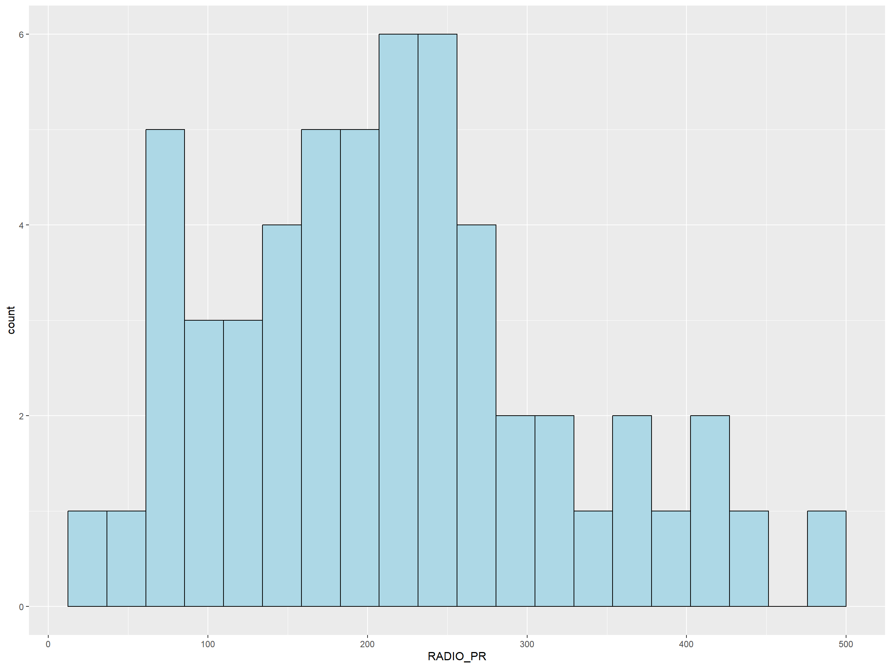
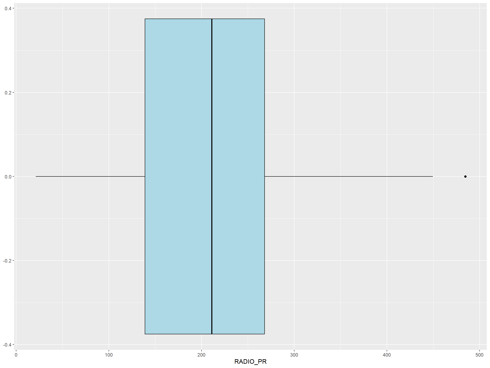
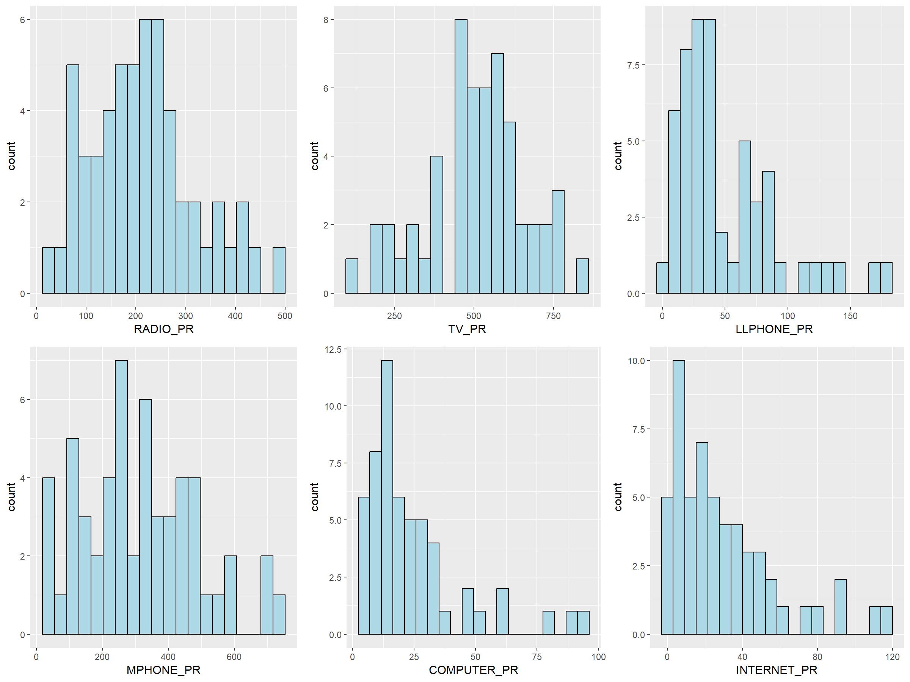

pacman::p_load(spdep, tmap, sf, ClustGeo,
ggpubr, cluster, factoextra, NbClust,
heatmaply, corrplot, psych, tidyverse, GGally)Hands-on Exercise 6 Geographical Segmentation with Spatially Constrained Clustering Techniques
1. Overview
In this hands-on exercise, we will gain hands-on experience on how to delineate homogeneous region by using geographically referenced multivariate data. There are two major analysis, namely:
- hierarchical cluster analysis; and
- spatially constrained cluster analysis.
By the end of this hands-on exercise, we will able:
- to convert GIS polygon data into R’s simple feature data.frame by using appropriate functions of sf package of R;
- to convert simple feature data.frame into R’s SpatialPolygonDataFrame object by using appropriate sf of package of R;
- to perform custer analysis by using
hclust()of Base R; - to perform spatially constrained cluster analysis using
skater()of Base R; and - to visualise the analysis output by using
ggplot2andtmappackage.
2. Getting Started
The analytical question
In geobusiness and spatial policy, it is a common practice to delineate the market or planning area into homogeneous regions by using multivariate data. In this hands-on exercise, we are interested to delineate Shan State, Myanmar into homogeneous regions by using multiple Information and Communication technology (ICT) measures, namely: Radio, Television, Land line phone, Mobile phone, Computer, and Internet at home.
3. The data and Packages
3.1 The data
Two data sets will be used in this study. They are:
- Myanmar Township Boundary Data (i.e. myanmar_township_boundaries) : This is a GIS data in ESRI shapefile format. It consists of township boundary information of Myanmar. The spatial data are captured in polygon features.
- Shan-ICT.csv: This is an extract of The 2014 Myanmar Population and Housing Census Myanmar at the township level. Both data sets are download from Myanmar Information Management Unit (MIMU)
3.2 Installing and loading R packages
Before we get started, it is important for us to install the necessary R packages into R and launch these R packages into R environment.
The R packages needed for this exercise are as follows:
- Spatial data handling
sf,rgdalandspdep
- Attribute data handling
tidyverse, especiallyreadr,ggplot2anddplyr
- Choropleth mapping
tmap
- Multivariate data visualisation and analysis
coorplot,ggpubr, andheatmaply
- Cluster analysis
clusterClustGeoThe code chunks below installs and launches these R packages into R environment.
Note: With tidyverse, we do not have to install readr, ggplot2 and dplyr packages separately. In fact, tidyverse also installs other very useful R packages such as tidyr
4. Data Import and Prepatation
4.1 Importing geospatial data into R environment
In this section, we will import Myanmar Township Boundary GIS data and its associated attrbiute table into R environment.
The Myanmar Township Boundary GIS data is in ESRI shapefile format. It will be imported into R environment by using the st_read() function of sf.
The code chunks used are shown below:
shan_sf <- st_read(dsn = "data/geospatial",
layer = "myanmar_township_boundaries") %>%
filter(ST %in% c("Shan (East)", "Shan (North)", "Shan (South)")) %>%
select(c(2:7))Reading layer `myanmar_township_boundaries' from data source
`C:\Users\tien_\OneDrive\SMU\haductien1211\ISSS626-GAA\Hands-on_Ex\Hands-on_Ex06\data\geospatial'
using driver `ESRI Shapefile'
Simple feature collection with 330 features and 14 fields
Geometry type: MULTIPOLYGON
Dimension: XY
Bounding box: xmin: 92.17275 ymin: 9.671252 xmax: 101.1699 ymax: 28.54554
Geodetic CRS: WGS 84The imported township boundary object is called shan_sf. It is saved in simple feature data.frame format. We can view the content of the newly created shan_sf simple features data.frame by using the code chunk below.
shan_sfSimple feature collection with 55 features and 6 fields
Geometry type: MULTIPOLYGON
Dimension: XY
Bounding box: xmin: 96.15107 ymin: 19.29932 xmax: 101.1699 ymax: 24.15907
Geodetic CRS: WGS 84
First 10 features:
ST ST_PCODE DT DT_PCODE TS TS_PCODE
1 Shan (North) MMR015 Mongmit MMR015D008 Mongmit MMR015017
2 Shan (South) MMR014 Taunggyi MMR014D001 Pindaya MMR014006
3 Shan (South) MMR014 Taunggyi MMR014D001 Ywangan MMR014007
4 Shan (South) MMR014 Taunggyi MMR014D001 Pinlaung MMR014009
5 Shan (North) MMR015 Mongmit MMR015D008 Mabein MMR015018
6 Shan (South) MMR014 Taunggyi MMR014D001 Kalaw MMR014005
7 Shan (South) MMR014 Taunggyi MMR014D001 Pekon MMR014010
8 Shan (South) MMR014 Taunggyi MMR014D001 Lawksawk MMR014008
9 Shan (North) MMR015 Kyaukme MMR015D003 Nawnghkio MMR015013
10 Shan (North) MMR015 Kyaukme MMR015D003 Kyaukme MMR015012
geometry
1 MULTIPOLYGON (((96.96001 23...
2 MULTIPOLYGON (((96.7731 21....
3 MULTIPOLYGON (((96.78483 21...
4 MULTIPOLYGON (((96.49518 20...
5 MULTIPOLYGON (((96.66306 24...
6 MULTIPOLYGON (((96.49518 20...
7 MULTIPOLYGON (((97.14738 19...
8 MULTIPOLYGON (((96.94981 22...
9 MULTIPOLYGON (((96.75648 22...
10 MULTIPOLYGON (((96.95498 22...Notice that sf.data.frame is conformed to Hardy Wickham’s tidy framework.
Since shan_sf is conformed to tidy framework, we can also glimpse() to reveal the data type of it’s fields.
glimpse(shan_sf)Rows: 55
Columns: 7
$ ST <chr> "Shan (North)", "Shan (South)", "Shan (South)", "Shan (South)…
$ ST_PCODE <chr> "MMR015", "MMR014", "MMR014", "MMR014", "MMR015", "MMR014", "…
$ DT <chr> "Mongmit", "Taunggyi", "Taunggyi", "Taunggyi", "Mongmit", "Ta…
$ DT_PCODE <chr> "MMR015D008", "MMR014D001", "MMR014D001", "MMR014D001", "MMR0…
$ TS <chr> "Mongmit", "Pindaya", "Ywangan", "Pinlaung", "Mabein", "Kalaw…
$ TS_PCODE <chr> "MMR015017", "MMR014006", "MMR014007", "MMR014009", "MMR01501…
$ geometry <MULTIPOLYGON [°]> MULTIPOLYGON (((96.96001 23..., MULTIPOLYGON (((…4.2 Importing aspatial data into R environment
The csv file will be import using read_csv function of readr package.
The code chunks used are shown below:
ict <- read_csv ("data/aspatial/Shan-ICT.csv")The imported InfoComm variables are extracted from The 2014 Myanmar Population and Housing Census Myanmar. The attribute data set is called ict. It is saved in R’s tibble data.frame format.
The code chunk below reveal the summary statistics of ict data.frame.
summary(ict) District Pcode District Name Township Pcode Township Name
Length:55 Length:55 Length:55 Length:55
Class :character Class :character Class :character Class :character
Mode :character Mode :character Mode :character Mode :character
Total households Radio Television Land line phone
Min. : 3318 Min. : 115 Min. : 728 Min. : 20.0
1st Qu.: 8711 1st Qu.: 1260 1st Qu.: 3744 1st Qu.: 266.5
Median :13685 Median : 2497 Median : 6117 Median : 695.0
Mean :18369 Mean : 4487 Mean :10183 Mean : 929.9
3rd Qu.:23471 3rd Qu.: 6192 3rd Qu.:13906 3rd Qu.:1082.5
Max. :82604 Max. :30176 Max. :62388 Max. :6736.0
Mobile phone Computer Internet at home
Min. : 150 Min. : 20.0 Min. : 8.0
1st Qu.: 2037 1st Qu.: 121.0 1st Qu.: 88.0
Median : 3559 Median : 244.0 Median : 316.0
Mean : 6470 Mean : 575.5 Mean : 760.2
3rd Qu.: 7177 3rd Qu.: 507.0 3rd Qu.: 630.5
Max. :48461 Max. :6705.0 Max. :9746.0 There are a total of eleven fields and 55 observation in the tibble data.frame.
4.3 Derive new variables using dplyr package
The unit of measurement of the values are number of household. Using these values directly will be bias by the underlying total number of households. In general, the townships with relatively higher total number of households will also have higher number of households owning radio, TV, etc.
In order to overcome this problem, we will derive the penetration rate of each ICT variable by using the code chunk below.
ict_derived <- ict %>%
mutate(`RADIO_PR` = `Radio`/`Total households`*1000) %>%
mutate(`TV_PR` = `Television`/`Total households`*1000) %>%
mutate(`LLPHONE_PR` = `Land line phone`/`Total households`*1000) %>%
mutate(`MPHONE_PR` = `Mobile phone`/`Total households`*1000) %>%
mutate(`COMPUTER_PR` = `Computer`/`Total households`*1000) %>%
mutate(`INTERNET_PR` = `Internet at home`/`Total households`*1000) %>%
rename(`DT_PCODE` =`District Pcode`,`DT`=`District Name`,
`TS_PCODE`=`Township Pcode`, `TS`=`Township Name`,
`TT_HOUSEHOLDS`=`Total households`,
`RADIO`=`Radio`, `TV`=`Television`,
`LLPHONE`=`Land line phone`, `MPHONE`=`Mobile phone`,
`COMPUTER`=`Computer`, `INTERNET`=`Internet at home`) Let us review the summary statistics of the newly derived penetration rates using the code chunk below.
summary(ict_derived) DT_PCODE DT TS_PCODE TS
Length:55 Length:55 Length:55 Length:55
Class :character Class :character Class :character Class :character
Mode :character Mode :character Mode :character Mode :character
TT_HOUSEHOLDS RADIO TV LLPHONE
Min. : 3318 Min. : 115 Min. : 728 Min. : 20.0
1st Qu.: 8711 1st Qu.: 1260 1st Qu.: 3744 1st Qu.: 266.5
Median :13685 Median : 2497 Median : 6117 Median : 695.0
Mean :18369 Mean : 4487 Mean :10183 Mean : 929.9
3rd Qu.:23471 3rd Qu.: 6192 3rd Qu.:13906 3rd Qu.:1082.5
Max. :82604 Max. :30176 Max. :62388 Max. :6736.0
MPHONE COMPUTER INTERNET RADIO_PR
Min. : 150 Min. : 20.0 Min. : 8.0 Min. : 21.05
1st Qu.: 2037 1st Qu.: 121.0 1st Qu.: 88.0 1st Qu.:138.95
Median : 3559 Median : 244.0 Median : 316.0 Median :210.95
Mean : 6470 Mean : 575.5 Mean : 760.2 Mean :215.68
3rd Qu.: 7177 3rd Qu.: 507.0 3rd Qu.: 630.5 3rd Qu.:268.07
Max. :48461 Max. :6705.0 Max. :9746.0 Max. :484.52
TV_PR LLPHONE_PR MPHONE_PR COMPUTER_PR
Min. :116.0 Min. : 2.78 Min. : 36.42 Min. : 3.278
1st Qu.:450.2 1st Qu.: 22.84 1st Qu.:190.14 1st Qu.:11.832
Median :517.2 Median : 37.59 Median :305.27 Median :18.970
Mean :509.5 Mean : 51.09 Mean :314.05 Mean :24.393
3rd Qu.:606.4 3rd Qu.: 69.72 3rd Qu.:428.43 3rd Qu.:29.897
Max. :842.5 Max. :181.49 Max. :735.43 Max. :92.402
INTERNET_PR
Min. : 1.041
1st Qu.: 8.617
Median : 22.829
Mean : 30.644
3rd Qu.: 41.281
Max. :117.985 Notice that six new fields have been added into the data.frame. They are RADIO_PR, TV_PR, LLPHONE_PR, MPHONE_PR, COMPUTER_PR, and INTERNET_PR.
5. Exploratory Data Analysis (EDA)
5.1 EDA using statistical graphics
We can plot the distribution of the variables (i.e. Number of households with radio) by using appropriate Exploratory Data Analysis (EDA) as shown in the code chunk below.
Histogram is useful to identify the overall distribution of the data values (i.e. left skew, right skew or normal distribution)
ggplot(data=ict_derived,
aes(x=`RADIO`)) +
geom_histogram(bins=20,
color="black",
fill="light blue")
Boxplot is useful to detect if there are outliers.
ggplot(data=ict_derived,
aes(x=`RADIO`)) +
geom_boxplot(color="black",
fill="light blue")
Next, we will also plotting the distribution of the newly derived variables (i.e. Radio penetration rate) by using the code chunk below.
ggplot(data=ict_derived,
aes(x=`RADIO_PR`)) +
geom_histogram(bins=20,
color="black",
fill="light blue")
ggplot(data=ict_derived,
aes(x=`RADIO_PR`)) +
geom_boxplot(color="black",
fill="light blue")
What can you observed from the distributions reveal in the histogram and boxplot.
In the figure below, multiple histograms are plotted to reveal the distribution of the selected variables in the ict_derived data.frame.

The code chunks below are used to create the data visualisation. They consist of two main parts. First, we will create the individual histograms using the code chunk below.
radio <- ggplot(data=ict_derived,
aes(x= `RADIO_PR`)) +
geom_histogram(bins=20,
color="black",
fill="light blue")
tv <- ggplot(data=ict_derived,
aes(x= `TV_PR`)) +
geom_histogram(bins=20,
color="black",
fill="light blue")
llphone <- ggplot(data=ict_derived,
aes(x= `LLPHONE_PR`)) +
geom_histogram(bins=20,
color="black",
fill="light blue")
mphone <- ggplot(data=ict_derived,
aes(x= `MPHONE_PR`)) +
geom_histogram(bins=20,
color="black",
fill="light blue")
computer <- ggplot(data=ict_derived,
aes(x= `COMPUTER_PR`)) +
geom_histogram(bins=20,
color="black",
fill="light blue")
internet <- ggplot(data=ict_derived,
aes(x= `INTERNET_PR`)) +
geom_histogram(bins=20,
color="black",
fill="light blue")Next, the ggarrange() function of ggpubr package is used to group these histograms together.
ggarrange(radio, tv, llphone, mphone, computer, internet,
ncol = 3,
nrow = 2)